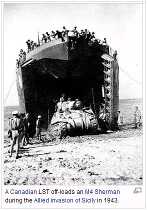

Well, this isn't really about Dad, but Dad told me the story. And there's no way I'd even know it if not for him managing to sit down with the family one night and tell it. I don't remember how we got on the subject, but suddenly we were talking about Donald, my Dad's brother.
|
Donald was three years older than Dad, and the twin brother of my Aunt. Donald died in World War II, not in combat, but of disease on a Red Cross ship. Nonetheless, he had a harrowing combat story or two, and this one I had not heard until this night a few years before Dad passed away. Donald and Dad both served in the US Navy. Dad spent much of the war in the Navy's V12 program at Caltech (where, incidently, Dad also went to graduate school after the war). Donald, being three years older, graduated from OCS and served in combat in the Pacific until he died. Much of his short career in the Pacific was as the Executive Officer of an LST. Here's a photo of an LST, taken from Wikipedia. (Wikipedia is impressive, isn't it?) Now, there's lots of stuff I don't know. I don't know the date of this story. I don't know the island being invaded. What I do know is that this information came from a letter received by my grandparents some weeks after Donald died, a letter sent to them by Donald. Nope, I've never seen the letter. |
 |
Anyway, as Dad related the story that night, Donald was serving as the Exec, and a large number of ships, including his, was supporting and participating in the invasion of a small Pacific island. The shelling was fairly intense as they prepared to storm the beach along with a number of other LSTs. While they still about three miles offshore, the Captain of the LST came up to Donald, and ordered that dinner be served. The Captain retreated to his stateroom (my guess is it's the only room of any size at all on an LST). Donald must have double-checked the order, but it stood. The Captain had left the bridge without transferring duty, and he wanted dinner, and he wanted dinner now, even as the shells continued to arrive continually and close aboard during their drive toward the beach to offload their cargo of men and materiel.
Apparently Donald called the Fleet Commander on the radio and explained the crazy, horrifying situation. Fortunately, the Fleet Commander understood the situation: the Captain had simply lost it. (I wonder, how could that be so unusual in this kind of harrowing combat? Yet one rarely hears of such stories. They're hard for the survivors to talk about.)
The Fleet Commander's simple response: "Son, detail someone and feed him dinner. You're in command of the ship. Good luck and Godspeed, Son."
So he did.